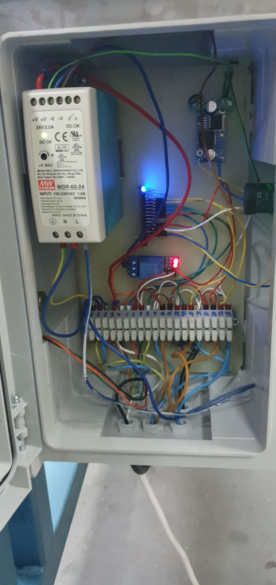

Stairs carpet pressing machine
Journey
For this project we started with just a mechanical upgrade. Our client required an upgrade for the pressing plate. The machine was using an old angled iron corner, and we did a custom rod, a diamond shaped one with a specific angle so that the pressing force on carpet was consistent along the rod.
But we didn't stopped there. We proposed un upgrade to the control system, it was using a pneumatic one that was expensive to do maintenance on it. We proposed to go with an electric one with the brain being an arduino: 
Going this new approach will provide a less expensive maintance and a smaller form factor of the control box, and in turn a smaller table. We even improved it, client can manually adjust the pressing time, in case you want to cover a large varaiety of carpet models. You can see here the final look of the control box: 
Product presentation
We are very pleased with our final product, but that is not the most important thing, we were curiose what our client had to say about it. Here you can see the final product:

{kind=link}
{kind=link}
{kind=link}
Needless to say that they order a similar upgrade for a second table